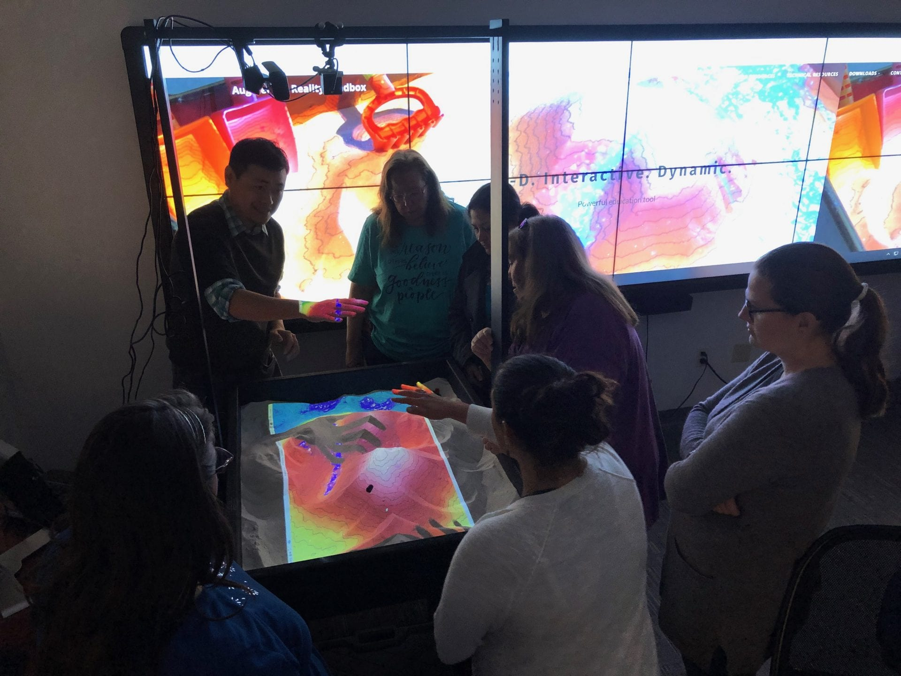
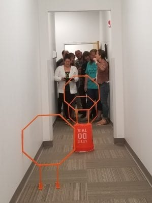

2 minutes read

The article highlights the success and impact of a Geographic Information Systems (GIS) Academy, focusing on providing hands-on training and experience to educators. Hosted by the University of Central Florida (UCF), the academy aimed to empower teachers with practical GIS skills and knowledge to integrate geospatial technology into their curriculum effectively.
The GIS Academy offered educators an immersive experience in GIS applications through a series of workshops and training sessions. Participants engaged in various activities, including learning the fundamentals of GIS, exploring geospatial tools, and understanding their applications across diverse fields.

Led by experts in GIS technology, the academy emphasized the importance of integrating spatial thinking and geospatial tools into teaching methodologies. Educators gained valuable insights into using GIS to enhance student learning experiences, making complex concepts more accessible and engaging.
Furthermore, the program encouraged collaboration and networking among educators, fostering a community of practice for GIS integration in education. Participants had the opportunity to share ideas, resources, and best practices, empowering them to implement GIS effectively in their classrooms.
The article underscores the significance of GIS skills in the modern educational landscape. Equipping educators with these tools not only enriches classroom experiences but also prepares students for a data-driven world by developing critical thinking and problem-solving skills.
The success stories and testimonials from participants highlighted the impact of the GIS Academy. Educators expressed enthusiasm about implementing GIS-based activities in their classrooms and noted the positive reception from students, citing increased engagement and understanding of spatial concepts.
In conclusion, the UCF GIS Academy served as a valuable platform for educators to acquire practical GIS skills and strategies for integrating geospatial technology into their teaching practices. By empowering teachers, the program contributes to fostering a more technologically adept and spatially aware generation of students.
Updated: February 05, 2019